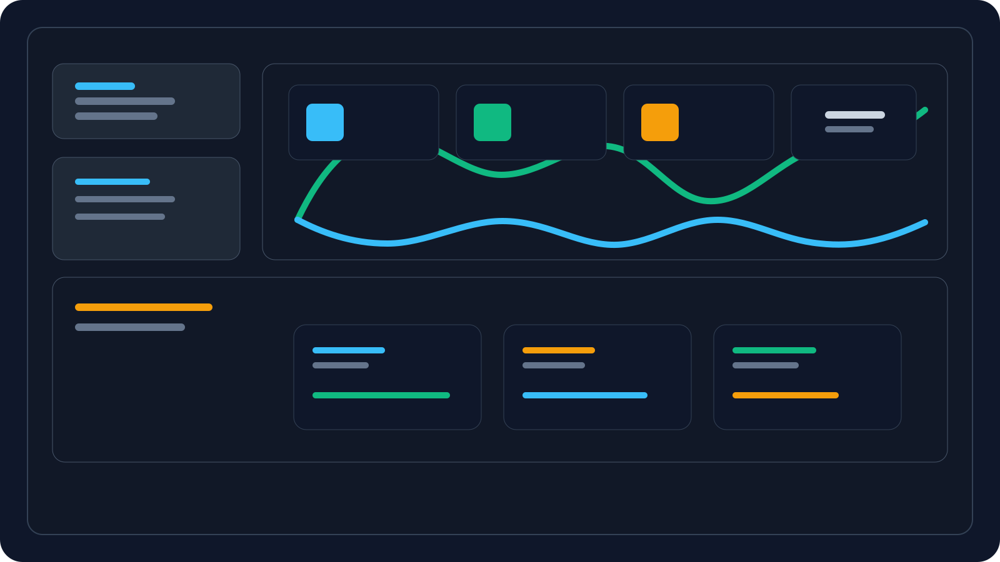

01

Credit Risk
Home Credit Risk Analysis
Analysing 305,545 loan applications to find which applicant profiles actually predict default — and where income-only screening gets it wrong.
View Case StudyData Analytics Portfolio · Case Studies
Data Analyst
I help businesses make better decisions by turning raw data into clear, actionable insight. My background in client relationship management taught me how to listen to stakeholders and understand the real problem behind their request — now I use SQL, Excel, Power BI and Python to answer that problem with evidence, not guesswork.
About
I spent close to four years as a Client Services Consultant in debt management, managing a monthly portfolio of 275–300 customer accounts and handling around 30 cases a day. My job was to understand people — why an account was at risk, what a customer needed next, and how to keep a case on track. Underneath all of that was data: CRM records, case histories, performance reports. I built my own weekly Excel reports using pivot tables to track consultant performance, and that habit of turning raw records into a clear picture is what pulled me toward analytics.
I've since completed a Data Science certificate with ALX Africa and Explore AI Academy, and built end-to-end analytics projects in credit risk and customer churn — going from messy source data, to SQL queries and Python cleaning, to a Power BI dashboard a stakeholder could actually open and use. I care less about being "good with numbers" and more about being useful to the person who has to make a decision with them.
Today I work with SQL and MySQL to query and shape data, Excel for fast exploratory analysis, Power BI to build dashboards stakeholders actually use, and Python (Pandas, NumPy) for deeper, repeatable analysis. I'm looking for a Junior Data Analyst role where I can keep applying that same instinct: start with the business problem, not the dataset.
Managed a portfolio of 275–300 customer accounts and built weekly Excel reports to track performance.
Started applying SQL and Excel to answer the questions daily case reports couldn't.
Completed a Data Science Certificate with ALX Africa & Explore AI Academy.
Completed end-to-end analyses using SQL, Python and Power BI, framed as real business problems.
Ready to bring a business-first analytical mindset to a data team.
How I Work
The same nine-stage process, every time — because a dashboard is only as useful as the business problem it answers.
Start with what the business is actually trying to solve — not the dataset. What decision is being made, and what happens if it's made badly?
Clarify who the analysis is for, what decision it supports, and what "useful" looks like to them before writing a single query.
Identify and pull the right data from the right source — SQL databases, exported CSVs, or existing reporting tools.
Handle missing values, fix formatting and type issues, remove duplicates — so the analysis stands on solid ground.
Look for patterns, distributions and relationships in the data, and form early hypotheses about what's driving the problem.
Turn the analysis into a Power BI or Excel dashboard the stakeholder can actually open and use — not a one-off chart.
Translate the numbers into plain-language findings — what's actually happening, and why it matters to the business.
Give the stakeholder a short list of practical, prioritised next steps — not just a summary of what was found.
The end goal: a decision made with evidence instead of guesswork, and a measurable outcome the business cares about.
Skills
Organised by what each tool is actually for in a real analysis workflow — not just a list of buzzwords.
Featured Case Studies
Every project follows the same format a hiring manager expects: the business problem first, the analysis second, the recommendation last.

Credit Risk
Analysing 305,545 loan applications to find which applicant profiles actually predict default — and where income-only screening gets it wrong.
View Case StudyCustomer Retention
Identifying which South African bank customers are most likely to churn, using a 5-factor risk score that predicts churn with near-perfect accuracy.
View Case StudyWorkforce Trends
Tracking global layoff trends across industries and regions to understand what's driving workforce reductions.
View Case StudySales Forecasting
Forecasting seasonal toy sales in Mexico to support smarter inventory and marketing planning.
View Case StudyContact
I'm actively looking for a Junior Data Analyst role. If you'd like to talk about a role, a project, or just data — reach out below.